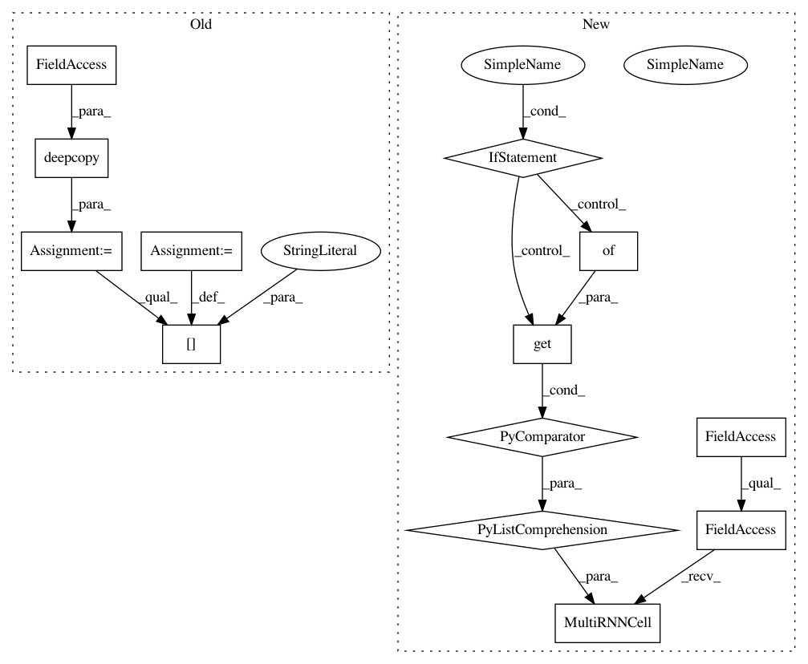

4ce9a9d078d41af1a960f0e5bf16e373f69d5117,open_seq2seq/encoders/rnn_encoders.py,UnidirectionalRNNEncoderWithEmbedding,_encode,#UnidirectionalRNNEncoderWithEmbedding#Any#,71
Before Change
source_length = input_dict["source_tensors"][1]
cell_params = copy.deepcopy(self.params)
cell_params["num_units"] = self.params["encoder_cell_units"]
self._enc_emb_w = tf.get_variable(
name="EncoderEmbeddingMatrix",
shape=[self._src_vocab_size, self._src_emb_size],
After Change
dp_input_keep_prob = 1.0
dp_output_keep_prob = 1.0
fwd_cells = [
single_cell(cell_class=self.params["core_cell"],
cell_params=self.params.get("core_cell_params", {}),
dp_input_keep_prob=dp_input_keep_prob,
dp_output_keep_prob=dp_output_keep_prob,
residual_connections=self.params[
"encoder_use_skip_connections"]
) for _ in range(self.params["encoder_layers"])]
self._encoder_cell_fw = tf.contrib.rnn.MultiRNNCell(fwd_cells)
time_major = self.params.get("time_major", False)
use_swap_memory = self.params.get("use_swap_memory", False)
In pattern: SUPERPATTERN
Frequency: 3
Non-data size: 13
Instances
Project Name: NVIDIA/OpenSeq2Seq
Commit Name: 4ce9a9d078d41af1a960f0e5bf16e373f69d5117
Time: 2018-06-13
Author: okuchaiev@nvidia.com
File Name: open_seq2seq/encoders/rnn_encoders.py
Class Name: UnidirectionalRNNEncoderWithEmbedding
Method Name: _encode
Project Name: NVIDIA/OpenSeq2Seq
Commit Name: 4ce9a9d078d41af1a960f0e5bf16e373f69d5117
Time: 2018-06-13
Author: okuchaiev@nvidia.com
File Name: open_seq2seq/decoders/rnn_decoders.py
Class Name: BeamSearchRNNDecoderWithAttention
Method Name: _decode
Project Name: NVIDIA/OpenSeq2Seq
Commit Name: 4ce9a9d078d41af1a960f0e5bf16e373f69d5117
Time: 2018-06-13
Author: okuchaiev@nvidia.com
File Name: open_seq2seq/decoders/rnn_decoders.py
Class Name: RNNDecoderWithAttention
Method Name: _decode